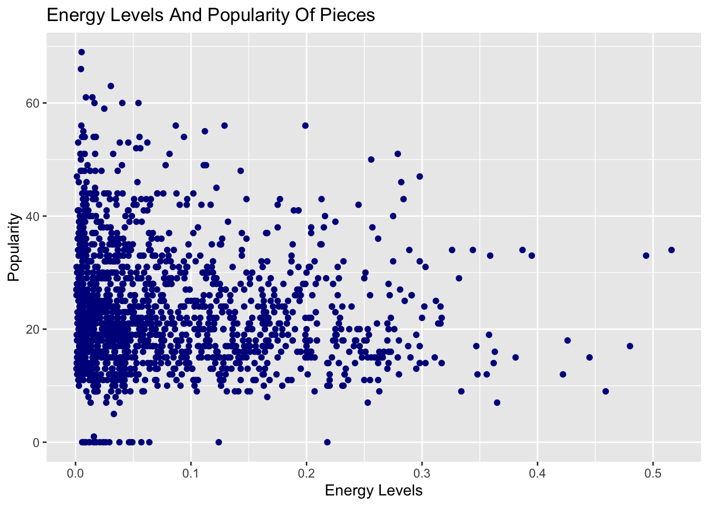
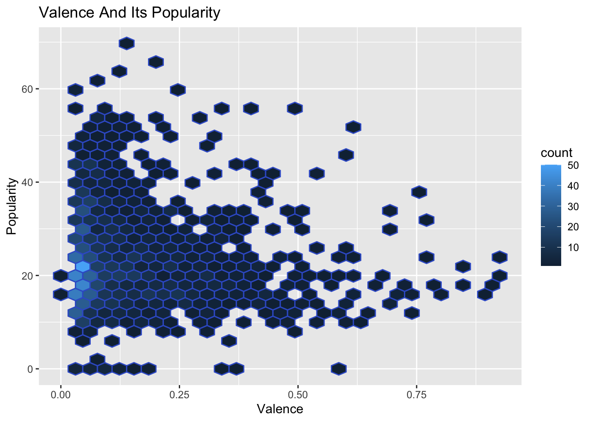
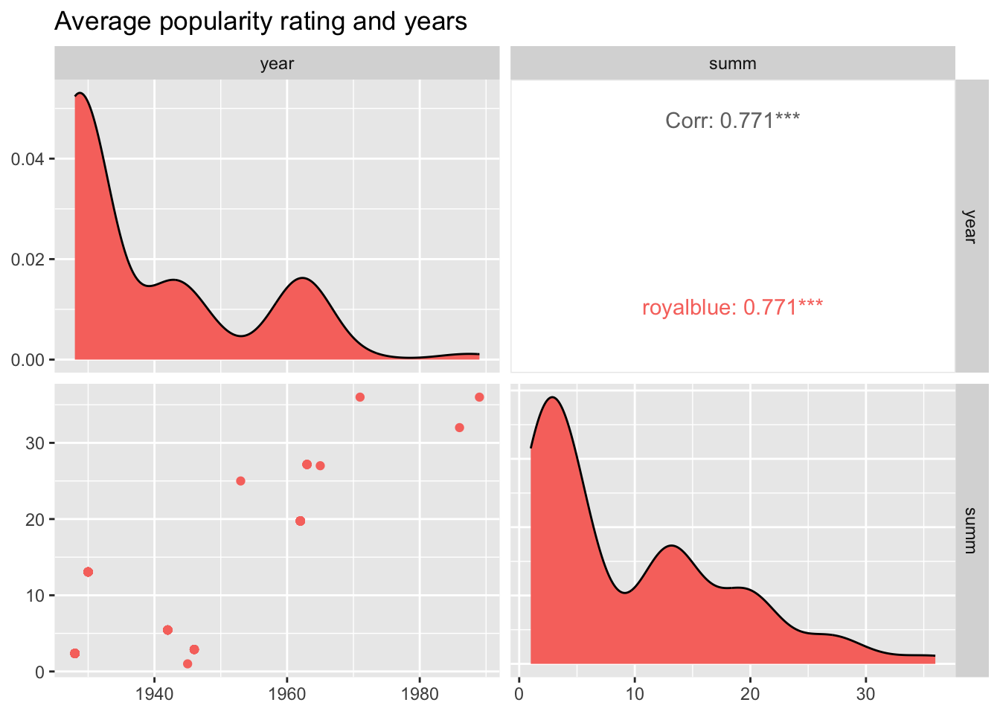

Data Story: Classical Music
Question: How well-liked is classical music today?
DataSet. Source: Kaggle
Introduction: Why is this important?
Percentage Audience for Music Genre
The average percentage of audience remains constant at 1% across many different years from 2017 to 2021. This is an intriguing fact - that it is a low percentage and a steady, unchanging percentage striked me as curious. I wondered if this percentage is still reflective of today, and if the popularity of classical music would change in the future. Some argue that classical music is timeless and will continue to stand the test of time - just like it has currently. On the contrary, some argue that classical music is “dying” because of the following factors:
#1 Realistically, less and less people listen each year per capita and even opera houses are kept open by public funding and private donations instead of sales. With lack of sufficient support from governments and lowered interest, it seems inevitable that classical music will fall out of favor.
#2 Classical music is no longer the same genre as it was - currently it is only comprised and recognised for pieces by the most prominent, superstar composers like Beethoven. There are still classical pieces made currently, but these pieces often go unnoticed and receive no recognition.
#3 Classical music competes head-on with modern music - which is evolving and changing all the time. Furthermore, as music becomes more experimentally and its form expands, it appears that current popular music could not deviate further from classical music.
Popularity of Music Over Time
Based on this graph, there is an overall significant increase in average popularity of classical pieces over time. However, this increase is volatile as seen in the random decrease in average popularity in certain years. Nonetheless, the popularity of classical pieces seems to be stabilising as each drop and increase in average popularity is less drastic. This suggests that classical music is becoming increasingly well-liked.
What Types Of Classical Music Is Well-liked?
#1. Energy

As seen in the graph, classical music pieces are usually more popular if they are less intense and active. However, we also note that the data points is most dense close to the bottom left of the graph. This reveals that majority of the data points have low energy levels and usually received similarly by the audience.
#2. Danceability

In general, as seen in the even spread of data, all types of classical music with different liveliness (as defined in the variable danceability) does not affect the popularity of classical music. This suggests that to the public audience, both danceable and lively pieces of classical music are well-liked.
#3. Valence

As seen in the scatter plot, classical music is significantly more popular when it has lower valence with a score of below 0.5. This suggests that classical music which are more somber and sad is more well-liked among the audience rather than pieces which are more upbeat and happier.
Classical Music In The Future
We will be using the second dataset here.

As seen in the graphs above, the high r-value of 0.771 suggests that average popularity rating and years have a strong positive linear correlation. Hence, it is appropriate to use this dataset to create a prediction model that can reflect the popularity rating of the dataset in the following years.
Limitations
#1 Reliability of Datasets
While the dataset I used can be used to predict the popularity of classical music in the future. It is still ultimately a dataset made for years that are outside of the data range of the original dataset. This affects the reliability of the data and the conclusions that I have made. The graph below shows the extent to which the linear regression model I have made is valid as the shaded area visualises its confidence interval.
#2 Classical Music Constantly Evolving
The dataset I have tided for analysis is from an larger dataset. My decision to pick out only the most prominent classical composers and musicians narrows the scope to which the findings from this analysis can apply to. Therefore, it may not be sufficient to reflect the genre of “classical music”. Additionally, music classified under classical music is constantly evolving and changing over time. Hence, it would be very easy for the observations made and the dataset gathered to become obselete.
Conclusions
From the various forms of analysis done, it appears then, that classical music has cemented its place in the present and in the future. However, it is worthy to note that it is like classical pieces that are lower energy and hence less active and intense. This agrees with my next finding that pieces that are of lower valence more relevant and popular. This suggests thet the public audience prefer pieces that are slower and sadder compared to upbeat, energetic songs. In the future, it is likely that the popularity of classical music will fluctuate a little. However, its popularity as a genre will follow the general trend of an increase.